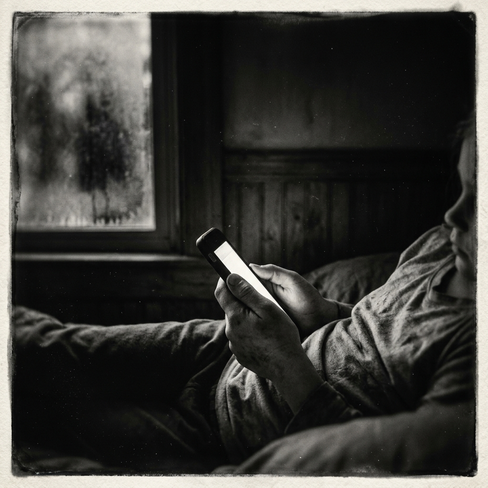
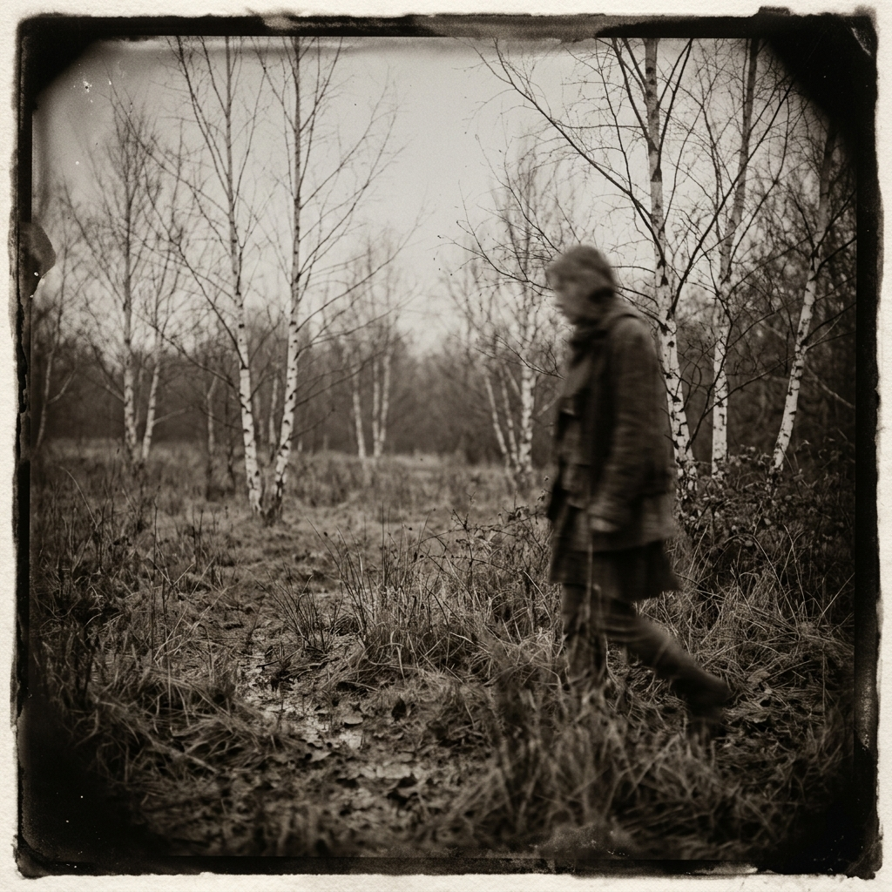
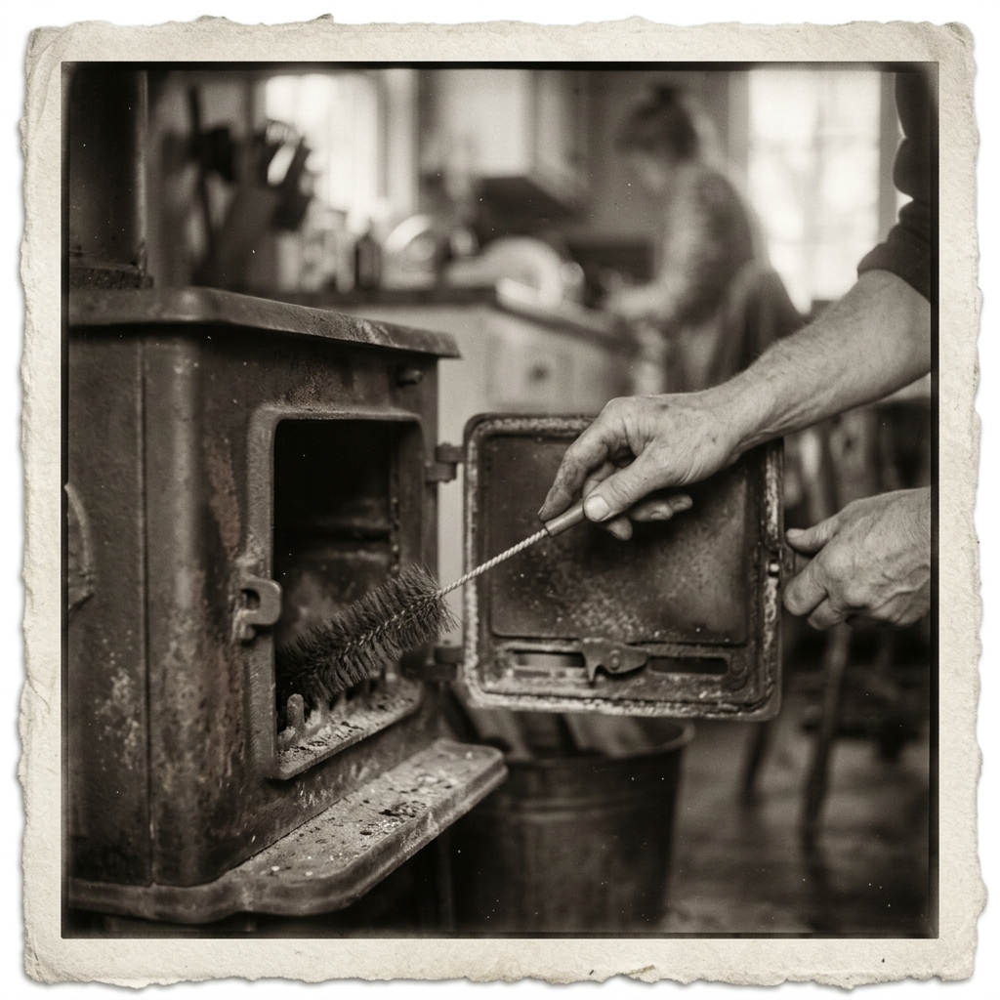
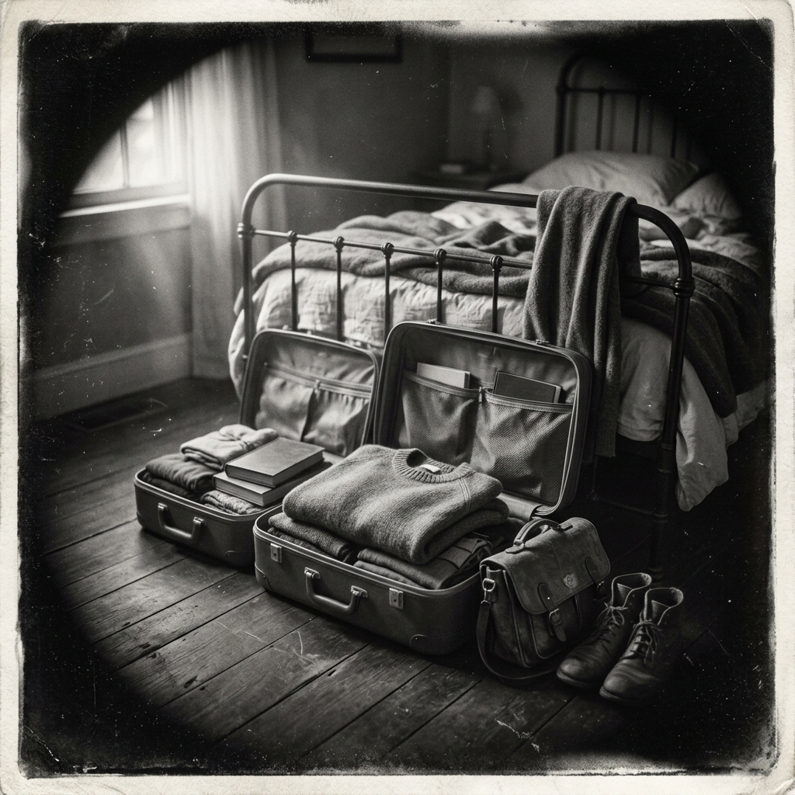

The Palliative Room
Ward 7A occupied the eastern wing of the Centennial Building, South Park Street, and its windows caught the afternoon light in a way that made the room look cleaner than it was. The ceiling tiles were acoustic foam, off-white, forty-seven of them visible from the recliner beside the bed. Monique had counted them on the third day. She had also counted the acoustic perforations in each tile — seventy-two.
Her father had been admitted fourteen days prior. The admitting diagnosis was metastatic pancreatic adenocarcinoma, treatment-resistant, performance status declining. The palliative care team had transitioned him from curative-intent management at day eleven. The morphine PCA was running at a basal rate of four milligrams per hour, with patient-controlled boluses available every twelve minutes. Her father had not used a bolus since day thirteen. The nursing staff documented this as reduced consciousness rather than comfort, which was the correct clinical reading.
She had published three papers on anticipatory grief. The third one had been cited forty-one times, including twice in a Norwegian clinical practice guideline that her department had helped draft. In those papers, she had described the phenomenon with the precision it deserved: the cognitive and emotional response to an expected loss, including its somatic correlates — cortisol dysregulation, disrupted sleep architecture, hypervigilance — and its frequently under-recognized benefits in terms of adaptive coping. She stood by all of it. The papers were sound.
The nursing team changed shift at seven AM and seven PM. She knew the names of the senior nurses and addressed them by name. The palliative care attending had spoken to her on day twelve. He had used the phrase transition to comfort-focused goals with a gentleness she appreciated. She had nodded. She had asked two questions about symptom management and one about the likely trajectory. He answered all three. She thanked him. He left. She sat back down in the recliner.
Her father's breathing pattern on day fourteen followed the Cheyne-Stokes progression she had read about but not, she realized, ever observed at this proximity and duration. The intervals were extending. Between one cluster and the next, she counted eleven seconds, then sixteen, then nine, then twenty-three. The pattern was irregular in its irregularity, which was itself characteristic.
A nurse — Priya, the overnight lead — came in at two-forty AM to check his vitals and adjust his positioning. She did this with a quietness Monique found professional in the best sense: efficient without haste, respectful without theatrical solemnity. Monique watched. Her father's face was slack, yellowed at the temples where the hepatic involvement was most visible, the orbits receding in a way the literature called temporal wasting. She did not look away from his face while Priya worked.
He died at four-seventeen AM on the fifteenth day. She was present. There was a sound that was not a sound — an absence of exhalation where exhalation had been. Priya came back in at four-twenty, looked at the monitor, looked at Monique, and said that she was very sorry. Monique said thank you. A physician came in at four-thirty-five to confirm the time of death and complete the documentation. Monique stood near the window while this happened.
By six AM she had called her sister in Moncton, who would manage the funeral arrangements. Her sister's name was Chantal. They spoke for eighteen minutes in a combination of English and Acadian French, the language shifting the way it always had in their family, without signal or negotiation. When she hung up she sat in the recliner in the dark room for forty minutes.
At seven AM the morning shift came on. She introduced herself to the new nurse and said she would be leaving that morning. She asked about the process for collecting her father's personal effects — his reading glasses, his rosary, the travel-worn copy of a Gabrielle Roy novel she had brought him in the first week — and the nurse explained the discharge of belongings procedure with the patience of someone who had done it many times without it becoming rote. Monique collected the items and put them in her bag.
She returned to the Marriott on Hollis Street. She ordered coffee and eggs from room service. She ate at the window, looking at the harbor. At eleven-ten AM she requested a late checkout and spent the remaining time with her suitcase open on the bed, working through the items she had accumulated over two weeks and placing them in an order that was not entirely logical but seemed appropriate to her hands. She folded a gray wool sweater that had been hanging over the desk chair and placed it on top.
The flight was Air Canada through Toronto. She sat in 12A and kept the window shade down for the first three hours. Over Greenland she raised it briefly. The ice fields were unresolvable from that altitude — a white texture rather than a surface. She lowered the shade again.
She landed in Oslo, Gardermoen, at eight-fifteen AM local time. The passport control officer said Velkommen tilbake. She thanked him in Norwegian. She took the Flytoget to the city center, changed to the Frogner tram, and arrived at her building on Josefines gate at ten-forty AM. The stairwell smelled of coffee and the particular organic cold of Oslo stone buildings in autumn. She carried her suitcase to the third floor, unlocked her door, and went inside.
She put the bag in the bedroom. She did not unpack it. She made coffee, stood at the kitchen window, and looked at the street below, where a woman was walking a Labrador on an extendable lead. The dog was investigating a planter box. The woman waited without impatience. The coffee cooled slightly before Monique drank it.
The Colony
The abscess had presented six weeks after her return, on the left hip, two centimeters lateral to the iliac crest. She had felt it first as a diffuse warmth and then as a specific tenderness localized enough to palpate through clothing. She booked the 8:00 AM slot at the Frogner fastlege clinic and presented the following Tuesday.
Her GP was Dr. Nadia Hadj-Messaoud, Algerian-born, raised in Oslo from age four, educated at the University of Oslo Faculty of Medicine, which was apparent from her manner — the particular Norwegian-physician directness that contained warmth without performing it. She had a 15-minute appointment slot, which in her hands became a precision instrument. She listened, palpated the site, annotated her findings in the digital record while Monique was still describing the symptom timeline, and ordered a bacterial culture swab with sensitivity panel. She wrote an empirical antibiotic prescription — Dicloxacillin, 500mg four times daily — while the culture was pending.
Dicloxacillin ran twelve days. The warmth diminished. The abscess did not fully resolve. At day nine, a lancination was performed under local anesthetic — ethyl chloride spray, field block — and the material expressed yielded a tablespoon of viscous matter the color of old mustard. She watched the procedure in the overhead surgical lamp reflection. The nurse cleaned and dressed the site. She went back to work the same afternoon. She sat through a two-hour departmental steering committee and took notes.
The culture came back at day eleven. The report identified Staphylococcus aureus, methicillin-resistant. Hadj-Messaoud called her rather than waiting for the next appointment. The call lasted four minutes. Monique received it standing in the corridor outside her office, one hand flat against the wall.
At the follow-up visit — a booked 15-minute slot, the doctor in at 7:58 AM when Monique arrived — Hadj-Messaoud had the screen angled so Monique could see the sensitivity panel results alongside her. This was, Monique understood, a deliberate orientation. The resistant profile was across the top row: Oxacillin R, Penicillin R, Amoxicillin-clavulanate R. Susceptible columns were narrower. Hadj-Messaoud's expression, which was normally settled at a register of calibrated attention, shifted — not into alarm, but into something more considered and more careful.
The new prescription was Tetracycline, 500mg twice daily, ten days. Monique's face changed, Hadj-Messaoud noted it, and explained: the Dicloxacillin had targeted the wrong mechanism. Tetracycline was the appropriate agent for this resistance profile. The gap was not a clinical failure but a sequencing of adequate decision-making under incomplete information, which was how most medicine worked. Monique said she understood this. She also understood that the infection had been running for longer than the twelve days of treatment, that her body had been incubating a resistant bacterium for weeks, possibly longer, which meant back through the Centennial Building weeks, back through the Halifax days, which meant she had been carrying it when she sat in the recliner in Ward 7A.
Hadj-Messaoud said there was a notification requirement. She said this plainly, without apology or excessive qualification. The Norwegian Surveillance System for Communicable Diseases — the MSIS — required mandatory reporting for MRSA detection. She would complete the notification that afternoon. Monique would receive a confirmation number.
Monique said she understood.
She said: "In my line of work, colonization is rarely, if ever, a good thing."
She did not use the word as metaphor. She meant it technically — bacterial colonization, MRSA establishing durable habitat in host tissue, which was precisely the classification: not an active infection requiring treatment, but a presence. A colony of organisms adapted to her physiology, metabolically integrated into her nasal passages and skin flora, not harming her in any active clinical sense but present. Resident. She had studied the word colonization in a different register, at length, over a career, in relation to grief and loss and the systematic displacement of peoples and the way that displacement structured interior lives for generations.
Hadj-Messaoud's face. She was too professional to laugh. She was also, Monique saw, genuinely trying to assess whether Monique was making the joke as a sign of comprehension or as a sign of dissociation.
"I'm comprehending," Monique said. "The joke is comprehension."
Hadj-Messaoud nodded. She explained the decolonization protocol. She printed it. She went through each element — Hibiscrub, Mupirocin, the linen protocol, the timeline. She said: five days, strict adherence, then a follow-up swab at day six, a second at day twelve, a third at day twenty-one. She said the protocol had an eighty-to-ninety percent efficacy rate at clearing carriage with strict adherence.
The slot ran sixteen minutes.
Monique walked out onto Industrigata. The morning was clear and cold, the particular Oslo October cold that came from the north and meant it. A tram passed. She had the printed protocol in her bag. She had the pharmacy prescription on her phone. She stood at the stop and looked at the apartment buildings across the street — their serene clean facades, the ordered windows, the flower boxes that still had late chrysanthemums in them. The Frogner surfaces.
She thought about the MSIS number. She would have a number. Her interior biology, which had developed its own resistant ecology without any input from her professional expertise, would be entered into a Norwegian public health database. She had used MSIS data in research. She had cited it in papers.
The tram arrived. She got on.
The Decolonization
She started on a Monday.
The Hibiscrub came in a five-hundred-milliliter bottle, amber plastic, the label printed in Norwegian and English, the active ingredient listed as Chlorhexidine gluconate 40mg/mL, which was 4% by weight, which was within the wound-decontamination and surgical preparation range, which meant it was not a cosmetic product and was not engineered with skin tolerance in mind. The instructions said: apply to wet skin, work into lather, leave for one minute before rinsing. Hadj-Messaoud had said: leave for three minutes. Hadj-Messaoud's protocol overrode the label.
She began at the scalp. She worked down in the sequence specified: scalp and hair, then face and ears — avoiding the eyes, which the label mentioned and which she did not need the label to tell her — then neck, chest, axillae, arms, hands, torso front, torso back as far as she could reach, abdomen, groin, thighs, legs, feet. The sequence took approximately nine minutes when performed correctly, which meant leaving the product on each section while moving to the next, which required a particular kind of attention — held, not anxious, focused on the procedural order. She had set the shower temperature at thirty-eight degrees Celsius, which was warm without being hot, because she had read that heat vasodilated the skin surface and potentially increased absorption, and Hibiscrub was not a product to increase absorption of beyond the prescribed contact duration.
By day two the skin on her forearms showed a faint redness. By day three the redness was on her shoulders and the skin between her scapulae where the Hibiscrub had run before she could fully distribute it. Her inner elbows — the antecubital fossae — felt dry and tight by the end of the third morning application, and by the evening application they had begun to crack at the creases. She applied a thin layer of unscented emollient — Locobase Repair, 100g tube from the pharmacy — to the cracked areas immediately after rinsing, which was permissible under the protocol as long as she waited fifteen minutes before any skin-to-surface contact. She set her phone alarm. She stood in her bathrobe in the kitchen and waited.
The Mupirocin was Bactroban, 2% ointment in a five-gram tube, the nasal formulation, which differed from the topical version in its excipient base and its delivery requirement: a cotton swab or clean fingertip pressed into each nostril, applied deep into the nasal passage, then the nostrils pressed together and released several times to distribute the ointment across the mucosa. She did this three times daily, at eight AM, two PM, and eight PM, which meant the two PM application happened in her UiO office on the days she was in. She kept the tube in her desk drawer. She applied it at her desk.
The ointment altered her olfactory environment within the first day. By day two, coffee smelled different — flatter, less volatile, the top aromatic notes suppressed under something petrochemical, which was the polyethylene glycol base of the ointment migrating forward in her nasal passages. By day three she could no longer reliably assess whether the lunch she was eating in the UiO canteen was good or not, because the flavor information was partially corrupted. She ate anyway. She ate the same lunch twice — the smoked salmon rice paper, a yogurt, a large water.
The linen protocol ran parallel. Every day: strip the bed. Both fitted sheet and flat sheet, the duvet cover, both pillowcases. Towels — not just the bath towel but the hand towel, the face cloth. Wash everything at 60°C minimum. The Electrolux in the bathroom had a 60°C cotton setting that ran one hour and fifty-second minutes. She started a load every morning before her first Hibiscrub application. By the third day she had used every set of sheets she owned and was monitoring the drying rack with the vigilance she normally reserved for clinical deadlines. Her sheets took four hours to dry fully on the rack — Norwegian indoor air in October at ambient temperature — and if they were not dry by seven PM she would need to run the programme again, which would push the day-four start back to before her alarm, which she had moved forward to account for the longer morning routine.
She owned two full sets of bed linen — she counted: one cotton flannel set in gray, one percale set in white — and one set of older white linen she used as backup. She had not previously thought of sheet quantity as a logistical variable.
She sanitized: every door handle in the flat with isopropanol wipes, every morning. The bathroom tap, the kitchen tap, the fridge handle. The interior fridge surfaces. Her laptop keyboard. Her phone screen. The desk chair armrests. The remote control, which she had stopped using after day two because she was not watching television during the protocol — she was not doing much that was not the protocol.
On day three she sat on the edge of the stripped mattress at nine PM, having remade the bed for the third time, having hung three towels on the drying rack, having placed the sanitized phone face-down on the sanitized nightstand, and she was tired: not the fatigue of exertion but the fatigue of sustained procedural attention. The kind of exhausted that came from being nowhere except inside the task. The protocol structured her days into complete occupation.
She set her alarm for six-forty AM. She lay down. The clean sheets had a faint chemical smell — the Ecover 60° laundry liquid, lemon-scented. She breathed through her mouth to avoid the Mupirocin register. She was asleep by ten PM.
Day four was identical to day three except that the inner elbow cracks had opened and bled slightly during the morning Hibiscrub application. She blotted them dry. She applied the Locobase Repair at the fifteen-minute interval. She noted the bleeding as a protocol complication and kept going.
Day five was the last day. She knew it was the last day when she woke, and she performed the morning Hibiscrub application with the same sequence she had used each morning — scalp, face, neck, chest, axillae, arms. She applied the Mupirocin at eight AM, two PM, and eight PM. She stripped the bed for the fifth time. She ran the last load at 60°C. She sanitized the door handles, the taps, the fridge handle. She made the bed with fresh sheets.
She went to bed. The alarm was set for the swab appointment at nine-twenty AM the following Tuesday at Frogner clinic.
The Ghost in the Chimney
The cleaners' strike at UiO was announced on a Wednesday by the Service and Commerce Union, effective the following Monday. The department's administrative coordinator sent a building-management circular at four PM that afternoon: common areas would remain uncleaned for the duration, staff were requested to manage their own workspaces, and there was a tentative timeline of two to three weeks. The circular did not address biological contamination risk for staff who were MRSA-positive.
Monique read the circular twice.
She emailed the department's health and safety representative that evening. She did not explain her MSIS registration. She asked about protocol for common areas during the strike period, specifically door handles, locker room surfaces, and the shared seminar lounge, which had upholstered seating and was used by forty-seven departmental staff across a five-day work week. The health and safety representative wrote back the following morning with a link to the university's general hygiene guidelines, last updated 2018, and said he would look into it.
That Saturday, she arrived at the building at eight-forty AM. She had signed in with the weekend access panel using her staff card. She brought two one-liter spray bottles of 70% isopropanol from the pharmacy supply — the hospital-grade spray, not the hardware store version — and a roll of blue absorbent Tork paper towels from the lab supply closet, which she had checked out the previous Friday under a research-supplies line item.
She began at the main entrance. Both push plates on the interior entrance doors. The elevator call buttons on all four floors — she took the stairs between each. The toilet handles and flush levers in both bathrooms on each occupied floor: twelve surfaces total. The taps — push-button type, which were better by design but not immune, and which required a longer spray-and-wipe pass because of the mechanical recesses at the button housing. The lounge on the second floor: the coffee machine touch panel, the kettle handle, the fridge door, the microwave door and control panel. The seminar tables on the second and third floors — she sprayed and wiped each surface in overlapping passes, which took twenty-two minutes for the larger table, which had eight chairs and seating positions that accumulated contact at the armrest zones.
She worked for four hours and ten minutes. She used one and a half liters of isopropanol and three-quarters of the towel roll. She put the empty spray bottle in the recycling and the used towels in a sealed bag she had brought for the purpose. She locked the supply closet. She washed her hands with the Hibiscrub she had brought in her bag, and left.
She did not tell the health and safety representative she had done this.
She received the text from her landlady at eleven PM on a Tuesday three weeks later. She was already in bed. The washing machine — her Electrolux front-loader, 8-kg drum, purchased 2010 according to the appliance plate she had checked — was mid-cycle when the sound changed. Not a mechanical fault sound but a change in water pressure, a softening, and then she heard it: water on tile. She was in the bathroom in four seconds. The rubber door gasket — the boot seal — had split along the lower arc, and gray water was running freely across the bathroom floor in a slow, continuous sheet, moving toward the hexagonal tile drain but exceeding the drain's intake rate, finding the gap under the bathroom door, and beginning to cross the hallway floor toward the bedroom.
She stopped the machine. She pulled the child-lock release, waited for the drum to equalize pressure, opened the door and found it still three-quarters full of water, which she bailed with the kitchen measuring jug — the glass one, one liter — over the course of six bails into the shower tray, then used the bathroom floor mop to push the standing water into the drain.
It took twenty-five minutes to clear the floor. The grout lines were still damp when she was done.
She texted the landlady: Vaskemaskinen er ødelagt. Dørpakningen er sprukket. Det er vann over badet.
The landlady's name was Ingrid. She replied at eleven-forty PM, which was later than Monique had expected, suggesting she had been awake. Her first message was: Åh nei. Her second message was a photograph of what appeared to be a different washing machine in a different apartment, captioned with text suggesting this had happened before, in another unit, and had been very difficult. Her third message was a question about what Monique had done with the water. Her fourth message — at twelve-ten AM — was: Er det skade på gulvet?
Monique assessed the floor. Parquet in the hallway, one section near the door seam had absorbed water at the board edge. She sent a photograph. She said: Kan hende, men det er lite. She did not say: I bailed the drum with a glass jug at midnight. She did not say: I have scrubbed this bathroom floor eleven times in the past month because I was trying to decolonize a resistant bacterium, and now the floor is covered in machine water.
Ingrid's next message arrived at twelve-thirty AM and said that the machine was very old and she had been worried about it and that a repairman would need to come and look, and that in the meantime Monique should not use the machine. Monique confirmed she would not. She did not say she was aware the machine was very old — had become aware, in fact, in a concentrated and tactile way over the five days she had washed linens twice daily at 60°C. Ingrid's final message said: Beklager dette veldig. Monique wrote back: Ikke bekymre deg. Don't worry.
The repairman came on Thursday. He assessed the gasket split, ordered a replacement part, said it would arrive in a week, and left. The outflow pipe, he noted, was disconnected. He reconnected it, using a mounting bracket that was, he said, not fully secure. He left a note on the machine saying the bracket needed a replacement fastener. The replacement fastener was not in his kit. The part would need to be ordered separately. In the meantime the outflow pipe could be used, carefully.
Monique used the machine, carefully, twice, before the vibration of the spin cycle displaced the pipe again and the bracket fell off entirely.
The Aduro 9 wood stove occupied the northwest corner of the living room, installed against the chimney breast in the exterior wall. It was a Norwegian-made stove, sealed combustion, with a clean-burn secondary air system designed to combust volatile gases above the primary flame, which produced a hotter, more efficient burn and was the reason the glass front stayed clear during normal operation. The manual — which she had not read the first time — was available as a PDF. She had not downloaded it.
She had compressed newspaper into tight cylinders and loaded them into the firebox on a cast-iron grate. She had found a lighter in the kitchen drawer. The newspaper caught quickly — faster than she expected — and the initial flame was large and confident. She closed the glass door.
The draft had not been established. She had not known about establishing the draft: warming the flue with a twisted piece of burning newspaper held up into the chimney opening before lighting the main fire, to reverse the cold air column sitting in the flu pipe and establish upward airflow, which was what made the combustion work. Without established draft, combustion gases moved forward and downward, not upward. The flame began to roll and flatten against the glass. The glass went black in a matter of seconds — not the gradual gray of normal creosote accumulation but an immediate near-total opacity, the kind that made the fire invisible from outside. She had not known glass could go that black that fast.
She had turned the secondary air control. She did not know which direction, at that point, increased or decreased the secondary air feed. She turned it the wrong direction. The combustion worsened. The room began to fill with a faint smell — not smoke, not fully, the sealed combustion was working as designed in that limited sense — but something hot and wrong, the smell of pyrolysis products circulating incorrectly.
She had opened the firebox door. She should not have done this. The inrush of oxygen made the flame surge briefly, and she closed it again immediately, but the upward surge had deposited fresh creosote on the already-blackened glass and produced a brief bloom of actual smoke into the room.
She let the fire extinguish naturally. It took forty minutes. She sat across the room and watched the glass stay black. She opened the living room window.
She texted her landlady about the stove. Ingrid wrote back that the chimney system had only just been repaired — a full chimney reconstruction across all five units in the building, funded by the co-owners' association after years of negotiation — and that a stove technician should come to look at it. No technician came. Ingrid wrote, eventually, that she would try to find someone. This was the autumn. The winter passed. The stove stayed dark, the glass stayed black, and Monique did not try again.
The Aduro 9 sat in the corner of the living room through the remaining months of that first winter, and into the following year, and into this autumn: a black-glass-fronted box that she had tried and failed to use, surrounded by the compressed-newspaper cylinders she had never cleaned out of the firebox.
The Nightmare

Sleep had been degrading for ten days. She knew the degradation pattern — she had read the literature on grief-related sleep disruption, on perimenopausal sleep architecture fragmentation. She would fall asleep between ten and eleven PM without difficulty. She would wake at two or three or three-thirty AM in a state of alertness that had no content — no specific anxiety available for inspection, no identifiable thought running — just alertness, the autonomic nervous system at full operational capacity in a dark room at a time when operational capacity was not required.
She would lie in the dark and assess the alertness. She had read somewhere — she had cited somewhere — that remaining in bed during non-sleep periods reinforced the association between the mattress and wakefulness. She knew this and remained in the bed anyway.
On the night of the fourteenth of November she fell asleep at ten-fifty PM and woke, the screen of her phone saying three-thirty-eight AM, from a dream she remembered with unusual completeness.
In the dream she was in a room she did not recognize — not any room from her actual life — and the room was chaotic in the particular dream-way that chaos manifested: things out of place, surfaces wrong, perspective inconsistent. There was a dog and a cat in the room. They were attacking each other or about to attack each other — the temporal boundary was unclear — and she was between them, responsible for separating them without being clear why it was her responsibility or whether she had agreed to it. The dog was snarling: a low, committed sound that meant it was past the warning stage. The cat was hissing and had arranged its body into the threat configuration — spine arched, weight back on the haunches, tail rigid.
She had lifted the cat. This was the logic available in the dream: she could control the cat's position, she could not control the dog, so she lifted the cat above her head to get it away from the dog. The cat's claws found her forearms immediately. The dog leapt. She flung the cat through a doorway into an adjacent room and pushed the door closed with her shoulder. The dog's teeth grazed her wrist — she felt this in the dream as a specific sensation — and then she was awake at three-thirty-eight AM with her arms tingling.
The tingling was bilateral — both forearms — and extended from the elbow to the fingertips. She knew what bilateral arm tingling indicated: hyperventilation, or panic, or both. She sat up. The heart rate was elevated, not racing — she would estimate, if she were being clinical, approximately ninety to one hundred beats per minute, which was not tachycardia but was not resting rate either. Her hands were cold. The bedroom was dark. The radiator was at its lowest night setting, which meant the room was approximately sixteen degrees Celsius, which was correct for sleep but not for sitting upright in a bathrobe with inadequate circulation to the fingers.
She sat on the edge of the bed for several minutes. The tingling in the forearms reduced. The heart rate was coming down. She recognized this as the autonomic recovery arc: sympathetic activation, adrenaline clearing, parasympathetic return. She could name every stage.
She got up and went to the living room.
The living room was dark and cold. The Aduro 9 in the corner was a shape in the dark. The windows onto the street had their secondary glazing closed, which reduced the sound from Josefines gate to a near-silence, and the street below was empty — a Tuesday night at three-forty AM, no trams, no people, the fog on the Oslo night making the streetlights diffuse. She stood at the window in her bathrobe and looked at the street. The fog was thick enough to make the building facade across the street disappear above the second floor. She could see the ground-level stone, the iron railings of the front steps, and then fog.
She had a headache. It was behind her eyes, specifically at the orbital margins, and had the texture of a sleep-deprivation headache: dry, pressured, worse when she moved her eyes to the periphery. She had had this headache, in some version, for six days. She had taken Paracetamol 1g three days in a row and stopped because she did not want to establish a medication-overuse pattern.
The cold dark chair in the corner of the living room. She sat.
She picked up her phone. She opened WhatsApp. Sophia's contact was at the top of the list. The last message thread showed a photograph Sophia had sent three days ago — her Nova Scotia property in November, bare trees in a field, the light very flat and northern — and Monique's reply: Beautiful. Cold here too. Four words.
She pressed the voice call icon. The call connected in six seconds, which was fast. Sophia's face appeared on the screen. She was in what appeared to be her home office — Monique recognized the wooden wall behind her, the particular warm amber of unfinished Nova Scotia pine. Sophia's hair was loose, not tied back, which meant she had been asleep. She had woken to answer. She had accepted the call.
"Hey," Sophia said.
Monique's face was doing something she could feel but not entirely control. The muscles around her jaw and under her eyes. She had been awake since three-thirty-eight AM in a cold room after a dream in which she had flung a cat through a door to save it from a dog, but her face was doing something anyway.
"I need to tell you," she said. Her voice had a quality she did not like. "I think I'm not — I think something is wrong with — I'm not—"
She stopped.
Sophia waited. She was very good at waiting. She did not fill silence with comfort noise or redirect with a question.
Monique said: "Psychotic equilibrium failure." She said it in the way she used the phrase in her work — as a technical category, the kind of thing she would write in a case notation. Disturbance of an individual's cognitive and emotional stability that approaches the threshold of genuine psychiatric crisis. Approaching.
She said: "I haven't slept through a night in two weeks. I'm getting — I think I'm getting senile. I can't — I don't think I can get through the week."
She was crying. She registered this as a factual state. Tears were present, which was correct given the precipitating factors: sleep deprivation, autonomic arousal, grief not processed, perimenopause, weeks of Hibiscrub and Mupirocin and 60°C laundry and the washing machine's rubber seal and the Aduro 9 stove in the dark corner.
Sophia said: "I'm here."
She did not say: It will be okay. She did not say: You'll feel better. She said: I'm here. It was an account of the present situation. Sophia was in a Nova Scotia office at ten-forty-something PM with her hair loose and the amber pine wall behind her and her face on the screen.
Monique held the phone with both hands. The living room was dark and cold. The fog outside the window was the same. She could see Sophia's face.
That was enough. Not sufficient in the sense that it resolved anything — the headache was still there, the sleep would not come for another two hours, the follow-up swab was in a week — but sufficient in the sense that it was an actual thing present in the dark room.
She sat in the cold chair with the phone until four-fifteen AM. They did not talk the whole time. Sophia put her feet up — Monique could hear the desk drawer she used as a footrest — and they existed in the same signal for that time, Frogner to Chester peninsula, fog to bare field, three forty AM to almost eleven PM.
The AI Sleep

She opened the interface at eleven-forty AM the following Wednesday. She had been awake since two-fifteen and had given up on sleep at four and had done the Hibiscrub protocol — she was still within the confirmation period, still treating the follow-up swabs with full protocol adherence while she waited — and had eaten breakfast at six AM and had done three hours of administrative work before stopping, because she could not read a sentence twice and retain it and the fourth reading of the same sentence felt like a diagnostic sign she should address before continuing.
She typed: I am a researcher in grief and loss studies. I am experiencing significant insomnia. I understand the two-process model and some behavioral sleep medicine framework. What I need is specific enough to be useful, not general information for the lay public.
The AI's response was not formatted differently because of her stated expertise. It acknowledged her framing and began: Since you're familiar with the two-process model, I'll work with the mechanisms directly. The core issue with chronic insomnia maintenance isn't usually Process C timing or Process S pressure alone — it's the learned arousal response to the bed, which is a classical conditioning problem that operates independently of your knowledge of it.
She read this. She typed: I'm aware of stimulus control. I find it practically inadequate. The instruction to leave the bed when awake is developed for patients who can regulate their temperature without a blanket and who do not live in Norwegian apartments in November.
Temperature is a legitimate obstacle and worth working with rather than around, the AI said. A thick robe and wool socks address most of it. The issue isn't comfort — it's association. If your brain has learned that the mattress surface predicts wakefulness and cognitive activation, it will produce wakefulness and cognitive activation when you are on the mattress. That is not a metaphor for anything else. It is a conditioning pathway.
What you're describing, the AI said, is a professional orientation toward interpretive layering that is very useful in your field and is not what's keeping you awake. The arousal response doesn't care what you understand about it. Understanding is not the treatment. The behavioral protocol is the treatment.
She sat with this for a moment.
She pushed back on the outdoor light exposure component. I understand that outdoor morning lux exposure advances the circadian phase, she typed. The requirement for 10,000 lux for thirty minutes before nine AM in Oslo in November means walking in wet and cold conditions that most humans would rate as punitive. I have enough to manage.
You are correct that outdoor lux is higher than indoor artificial light, even in overcast Nordic conditions, the AI responded. A bright overcast November day in Oslo delivers approximately 5,000-10,000 lux. You don't need full sun. You need to be outside with your eyes open in daylight. Forty minutes, as early in the morning as manageable. Rain and cold register as aversive stimuli but do not reduce the lux signal reaching your suprachiasmatic nucleus. Your brain doesn't know you're uncomfortable.
She closed the interface. She went for a walk in the rain at eight AM the following morning. The Frogner park lower path was wet, the mud at the path margins soft enough to take her shoe print, and the birch trees had lost everything — bare white trunks, the November light coming through them horizontally from the east in a flat gray-white that was nothing like sunlight but which was, she understood, light. Unambiguous outdoor lux. Her shoes were wet within twelve minutes. She walked for forty-two minutes and went home.
She ate breakfast.
She returned to the interface that evening and asked about the adenosine mechanism — not because she did not understand it but because she wanted to hear it described in the context of her specific failure pattern.
Adenosine is a metabolic byproduct of neural activity, the AI said. It accumulates in extracellular space throughout the day, building sleep pressure. Sleep clears it. Caffeine doesn't reduce adenosine — it blocks the receptors that detect it. When caffeine clears, the accumulated adenosine floods the receptors simultaneously, which produces the characteristic afternoon energy collapse. In your case, if your espresso cutoff is later than mid-morning, you are likely delaying adenosine signaling past the point where it can fully participate in nighttime sleep initiation.
She looked at her espresso habits. Her cutoff had been, without her having established it as a cutoff, approximately one PM. She had a twelve-thirty PM espresso at her UiO desk most days. Sometimes a two PM one.
She set the cutoff at ten-thirty AM.
This required telling herself, every day, at ten-twenty-five, that the next five minutes were the last available window, and then not having coffee again until the following morning, which was nine and a half hours without caffeine in a context where she was already significantly fatigued and was doing this purely on the instruction of a machine, which she thought about explicitly on the third day of the new cutoff when she was in a two PM meeting at UiO and wanted coffee with a specific and unambiguous desire and did not get it.
The eight-thirty PM light protocol was the one she found most counterintuitive. Simulate sunset indoors beginning ninety minutes before your target sleep time, the AI had said. Warm-spectrum light only. No screens with blue-light emission. The suprachiasmatic nucleus uses light to set the circadian timer; artificial cool-spectrum light after dark signals continued daytime to the clock.
She bought two warm-spectrum LED bulbs — 2700K, the hardware store on Hegdehaugsveien — and replaced the kitchen and living room overhead fixtures. She turned them on at eight-thirty PM. She turned off her laptop. She did not turn on the television. She read, in the warm-spectrum light, with a physical book, which she had not done habitually in approximately four years. She was reading about something she was not finding interesting. She read for an hour and went to bed.
She was asleep by ten-fifteen PM.
She woke at two-forty AM and was awake for forty minutes and went back to sleep.
She got up, did the Hibiscrub, ate breakfast, and walked to the park in the rain.
The two-process model, she had explained to her third-year seminar three years ago, was an elegant biological system. Process S — the sleep pressure that built from waking and was discharged only by sleep — and Process C — the circadian clock's oscillating alerting signal that opposed sleep pressure during the day and released it in the evening — worked together to produce the daily sleep/wake cycle. The model had been formulated by Alexander Borbély in 1982. She had used it as an analogy in a paper about grief's temporal structure in 2019. She had written: grief, like sleep, operates according to dual process regulation — the accumulation of unprocessed loss exerting pressure toward confrontation (Process S analog) while adaptive functioning enforces a regulatory rhythm that manages the rate of that confrontation (Process C analog).
She had been pleased with that paragraph. It was elegantly constructed.
She thought about it now, walking in the rain in the Frogner park mud in her wet shoes at eight-fifteen in the morning. She was a person walking in wet shoes. The lux was entering her open eyes. Her suprachiasmatic nucleus was receiving the signal.
She went home. She made coffee. Eight-fifty AM — within the cutoff. She stood at the kitchen window. The Labrador was not there today. There was a woman with a stroller and the stroller's orange rain cover was very bright against the gray November street.
She drank the coffee.
The Banal Reset

The third swab was taken on a Tuesday, the twenty-first day post-protocol, at the nine-twenty AM slot at Frogner clinic. The swab was nasal — anterior nares, both sides, the nurse rotating the swab with the correct pressure that Monique now recognized from six repetitions. The result would come back to the digital health portal within forty-eight hours.
The result came back in thirty-one hours.
She was at her UiO desk when the portal notification arrived on her phone. She opened it. The laboratory result page loaded, the standard health record formatting — patient ID, sample type, collection date, processing date. The analysis section: Staphylococcus aureus (MRSA): Ikke påvist. Not detected. Below this, the clinical note entered by Hadj-Messaoud: Dekoloniseringsprotokoll gjennomført. Tre swaber negative. Pasienten friskmeldt fra MRSA-bærerskap.
She read it twice. Then she read the English automatic translation the portal offered: Decolonization protocol completed. Three swabs negative. Patient cleared from MRSA carriage.
She put the phone face-down on the desk. She looked at the window of her office, which faced north — the inner courtyard of the Blindern campus, the birch trees bare in December light. She had a two PM seminar in forty minutes. She turned back to the document she had been annotating before the notification.
The MSIS registration remained. She understood this: the database entry existed for epidemiological record-keeping and would not be retroactively deleted upon clinical clearance. Her number was a permanent data point.
She went to the two PM seminar.
The outflow pipe was on the bathroom floor when she got home. It had fallen again during the day — the vibration of a load she had started before leaving, the bracket having finally given up entirely, the pipe lying sideways against the wall with the drain end open. There was a small puddle at the base of the pipe from residual moisture in the line.
She texted the landlady. The landlady replied within three minutes, which was faster than usual, suggesting proximity to her phone. She said the mounting bracket piece was missing and she could not find it and the repairman had said it was essential.
There was a knock on her door seventeen minutes later.
Sara was at the door. She was wearing a canvas work apron over a heavy wool sweater, and her gray hair was short and back, and she had the particular unhurried manner that Monique associated with people who had spent professional time solving physical problems with their hands. Sara was sixty-three, Swedish, and had welded structural steel for thirty-one years — offshore platforms, primarily — before her knees made standing for eight-hour shifts inadvisable. She had been in 3B for six years. They had spoken perhaps forty times: the shared post box, the stairwell, the one occasion when Monique's radiator was making a sound and Sara had come to look at it and identified the cause in four minutes. Sara had heard the commotion of the flood on the Tuesday night three weeks prior and had knocked to ask if she needed anything. Monique had said she was managing, and Sara had gone back to her flat without drama.
She had come now because she had heard the repairman's visit on Thursday and had thought about the pipe situation.
She looked at the pipe on the floor and the wall fitting and the bracket situation for approximately forty-five seconds without touching anything. Then she said: "Repairmannen forstod det feil." The repairman misread it.
She went back to her flat. She came back with a wide plastic twist-tie — the kind that came on bread bags or cable bundles, reinforced nylon, pale blue, approximately twenty centimeters long.
She fed the twist-tie through the wall-pipe bracket loop and around the outflow pipe at the appropriate position. She twisted the ends together three times and pushed them flush against the wall bracket. She stood up. She turned the machine on at the cotton 40°C setting and they both stood there while it filled and the pump engaged and the outflow pipe stayed in position.
"Det holder," Sara said. It holds.
Monique looked at the pale blue twist-tie against the white machine casing. It was the simplest possible fastening material — a bread-bag tie, effectively — applied to what the repairman had described as a structural problem requiring a specialist part. It was holding. The water moved through the pipe and into the wall drain and across the drain field correctly.
"Takk," Monique said.
Sara shrugged once and went back to 3B.
Monique stood in the bathroom while the wash cycle completed. Thirty-eight minutes on the 40° cotton setting. She used the time to wipe down the machine exterior and the bathroom shelves. She kept wiping.
The Aduro 9 had been sitting in the corner for thirteen months. The compressed-newspaper cylinders from the first and only attempt were still in the firebox.
She had looked up the clean-burn air intake system online three days after the WhatsApp call with Sophia. She had found the Aduro technical documentation and a forum discussion by Norwegian stove owners that included a step-by-step description of the secondary air channel configuration. She had searched for YouTube demonstrations. She had asked the AI interface for clarification on the specific mechanism — what the secondary air ports did to the combustion path, why the glass blackened when they were blocked, how to assess whether the tertiary air wash was functioning. The AI had been thorough on this, and she had found that thorough more useful than she expected.
Her colleague in the UiO social anthropology department — Yngve, who maintained a cabin outside Norefjell and had run a Jøtul stove for twenty years — had told her over lunch that soot-blocked air intakes were common in stoves that had been left unrun, and that the intakes could be cleared manually with the right tool, and that the right tool was something flexible and narrow enough to fit the channels. He had said: try a pipe cleaner. He had actually said piperenser, which was the Norwegian word, and meant the thin wire-and-nylon cleaning brush, the craft-store or hardware-store item.
She found them at Jernia on Hegdehaugsveien, the same hardware store where she had bought the 2700K light bulbs. They came in a packet of fifteen, wire-cored with nylon bristles, in assorted colors. She bought one packet.
She had the AI's technical description and the forum notes and Yngve's advice and the fifteen pipe cleaners in assorted colors and she stood in front of the Aduro 9 and opened the firebox door and removed the compressed-newspaper cylinders — they were dry and intact; she had not touched them in thirteen months — and looked at the secondary air intake ports, which ran along the upper interior of the firebox: a series of small rectangular apertures in the cast-iron wall, through which the secondary air was supposed to flow to meet the rising combustion gases and complete their combustion above the primary flame, which was the mechanism that kept the glass clear.
The apertures were blocked. She could see the soot accumulation — a hard gray-black deposit packed into each opening.
She took a yellow pipe cleaner. She inserted it into the first aperture. She worked it in and out and in rotation, and a quantity of hard soot came free and fell onto the firebox floor. She did the next aperture. And the next. There were eleven total. She worked along the full row, then vacuumed the floor of the firebox with the hand vacuum she normally used for upholstery. She cleaned the primary air inlet at the base. She inspected the glass and the glass gasket. She checked that the flue damper moved freely.
She loaded the firebox with dry birch kindling she had bought from the Joker on Josefines gate — a bag of split pieces she had been carrying up the stairs and leaving by the door for three weeks. She found a Norwegian newspaper from the recycling bin — one sheet, twisted — and lit it inside the firebox with the door cracked, holding it toward the flue opening to warm the air column above. She watched the flame pull upward. She held it for sixty seconds. The draft established.
She placed the kindling, built the fire in the pyramid configuration the forum described, and lit it.
The flame caught. The glass stayed clear.
She sat in the armchair across the room and watched it. The secondary combustion was visible above the primary flame: a second zone of blue-orange ignition where the combustion gases met the secondary air current, burning off the volatiles that would otherwise have darkened the glass. She could see the mechanism working. The glass stayed clear and the fire burned correctly behind it.
She watched it for a while. The room was warm.
The Suitcases

The hot flashes came now in the morning, mostly — a warmth that moved up from the sternum and spread across the clavicles and reached the face, and then receded, and left her skin faintly damp and then cool. She had started tracking them three weeks ago: onset time, duration, intensity on a four-point scale she had devised herself and then recognized as excessive, so she had dropped the intensity rating and kept only the time. They were six to eight a day, clustered between six and ten AM. The frequency had not decreased, but the relationship to them had changed — they arrived and she noted them and they passed and she continued whatever she was doing.
The rash on her lower back — contact dermatitis, consequence of the five weeks of Hibiscrub — was fading. She could see its edges retreating, the skin at the perimeter returning to its ordinary color. The center of the affected area was still dry, still slightly raised, but when she pressed it she felt normal sensation rather than the tight tenderness she had had in November. The Locobase Repair twice daily. It was working at the pace skin healed.
Each morning she drank a glass of Norwegian kefir before coffee. This had been Yngve's advice, offered the same lunch when she had asked about the pipe cleaners — he had said: antibiotika river opp tarmfloraen, the Tetracycline strips the gut flora, and kefir is not a cure but it is something real. She had bought it at the Meny on Bygdøy allé, the full-fat, the Tine brand in the two-hundred-milliliter carton. She drank it standing at the fridge, cold, with a slightly sour taste she did not enjoy. At the end of four weeks, her gut had recovered to the point where she could eat a full dinner without the cramping that had accompanied the final week of Tetracycline.
Each morning the kefir was cold and slightly sour and it was working.
She had read the EES headline on a Thursday. European Entry/Exit System operational updates had been running since late November — the fingerprint and facial recognition system that EU external border crossings had activated for non-EU passport holders. Norwegian implementation had gone through with the system's staged rollout, and the main operational concern was processing bottlenecks at transit hubs. Frankfurt, which was her transit point for the Halifax connection, was in the third tier of concern in the risk matrix: sufficient processing infrastructure but variable staffing levels, the bottlenecks concentrated in the six-to-nine AM arrival window.
The headline used the phrase one in seven, which meant a fourteen percent cancellation probability under peak bottleneck conditions. She read the number and then looked for the denominator it was embedded in — peak conditions at which specific terminals during what timeframe — and found the reporting adequately sourced and the probability specific enough to be useful.
One in seven. Six out of seven aircraft completed their connections normally.
She put the headline down.
The suitcases were the two she had brought back from Halifax in September — the large one, hard-shell charcoal gray, and the smaller cabin-sized one in the same color, which she had bought in a set. They had been in the bedroom since her return, never fully unpacked. She had been rotating things in and out of it all autumn: the gray wool sweater she had packed in the Halifax Marriott had been in and out of the large suitcase three times since September. At the moment it was folded on the bedroom chair, where she had placed it after the last wash.
She turned off her laptop at three-forty PM. It was a Tuesday in early December. The afternoon light in Frogner at that hour was what Oslo December offered: low, directional, coming through the west-facing windows at an angle that caught the dust in the air above the floor and made the room look amber-lit without any lamp on. This was ordinary light. This was the light that came every afternoon in December at this latitude, and she had watched it from this window enough times this autumn to know it.
She stood in the living room for a moment. The Aduro 9 was in its corner, the glass clear since the November evening she had lit it, though she had not lit it since — she had been meaning to, she had the birch kindling in a basket by the door, she would light it when she got back. The stove stood in its corner with its clear glass front.
She went to the bedroom. She moved the suitcases to the floor — one on each side of the bed, open, the hard-shell charcoal gray ones side by side with their lids tipped back. She stood and looked at them.
The gray wool sweater was on the chair. She picked it up. It was folded already — it had been folded since the last wash, a clean fold with the arms tucked in and the collar aligned — and she set it into the bottom left corner of the large suitcase. The corner was the right place for it, the anchor position, the item around which other items would be organized. This was how she packed: anchor first, then build outward.
She went to the wardrobe. She took down the items she would need for four months — she was going until spring — and folded them on the bed in the order she would pack them. Three wool sweaters, two light ones, the heavy one. The two pairs of thermal underlayers she wore on the bad cold days. The dress she wore to the department's end-of-year event, which she had worn and then hung up, and which needed no attention. The running shoes from under the bed. The leather ankle boots that were the right ones for Chester peninsula in January. The waterproof jacket. The books — four of them, from the nightstand and the desk — that she had been planning to read and had not read yet.
She began to pack. The suitcase was a practice she understood: one item at a time, each in its place. She did not think about what she was leaving or what she was going toward, because those were not questions the packing required. The packing required the items and their placement and the four months of clothing appropriate to a Nova Scotia winter and the knowledge that Sophia would be at the Halifax Stanfield airport on the afternoon of her arrival, standing in the arrivals area wearing her work coat, the dark green one with the hood that Monique had bought her three birthdays ago.
She would be there. The airport would be cold. The drive to Peggy's Cove Road took forty minutes in the winter, longer if there was snow. There was usually snow.
The afternoon light in the room shifted slightly as the sun dropped below the roofline of the building across the street. The amber went out of it. The room was its ordinary December-afternoon gray. She kept packing. The smaller suitcase was filling with her bathroom things — the Mupirocin was not coming, the Hibiscrub was not coming, the Locobase Repair was coming in case the skin needed it through the winter, one tube. The kefir was not coming; they had kefir in Halifax, she had not thought to check whether it was available in Chester but there was a Sobeys in Mahone Bay and Sobeys stocked it. She would find out when she got there.
One item, then the next. The running shoes fit in the lower right corner. The books went flat in the lid. The gray wool sweater was already in its position.
She was going home to Sophia for the summer — for the four months that would carry her through to April.
She folded the waterproof jacket and placed it on top of the gray wool sweater. She moved on to the next item.